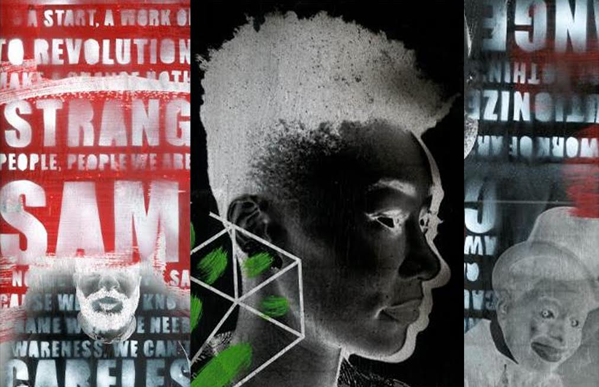
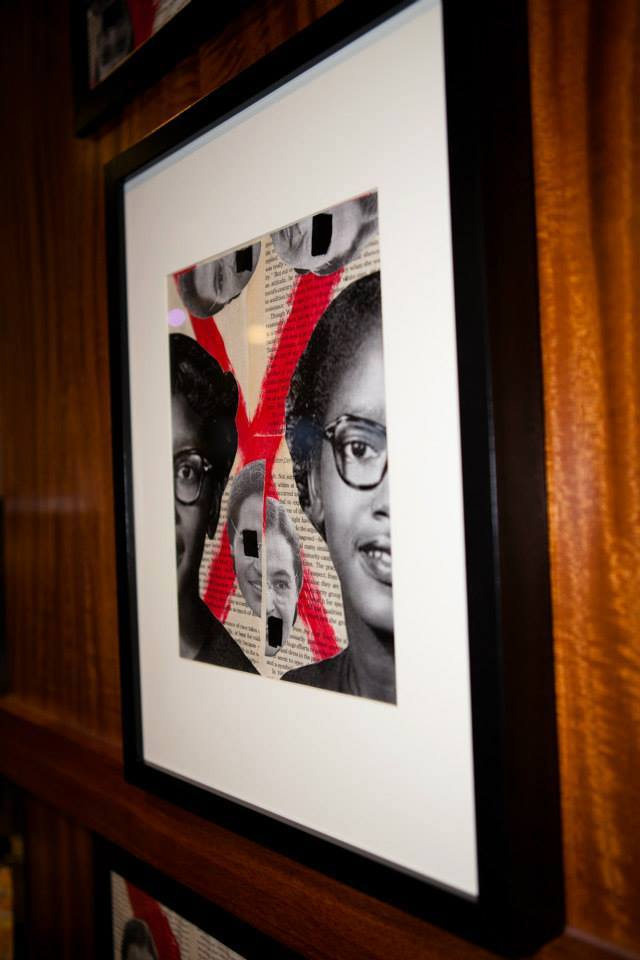

Short Bio
Justin Adu, or Adu as he is affectionately known by to his peers, is currently the Associate Creative Director of Digital and Social Media at Carol H. Williams Advertising (CHWA). Before leading the digital and social media executions for clients like General Motors at CHWA, Adu's diverse career has impacted notable brands, organizations, and public figures.
Adu earned his BS in graphic design with a minor in marketing from Alabama A&M University. He later received an MA in advertising with a concentration in art direction from Savannah College of Art & Design. Adu has made huge successful strides in the advertising industry and made a foothold in the art world by curating and exhibiting original art in ten solo art exhibitions. His projects include "African Amedia," a performance piece that addresses the negative portrayal of African Americans in the media, and "Unsung Changemakers" a mix-media installation that celebrates the untold stories of African American heroes.
Adu continues to create stunning visuals and come up with brilliant ideas as a commercial designer. His work has impacted such brands as the Coca-Cola Company, NBA, Pizza Hut, PepsiCo, Dallas Cowboys, JCPenney, Spotify, AT&T, T-Mobile, Dannon, SXSW (South by Southwest), and several other Fortune 500 companies and organizations. Furthermore, Adu has been recognized for his stellar work and talent by local and national outlets such as Saint Heron, BET, CNN, D Magazine, Dallas Weekly, It Must Be Jam, Soul Train, Revolt TV, Blavity, CW 33, In Transit, Forty Magazine, Dallas Observer (30 Under 30 Honoree), Ebony, Rolling Out, The ADCOLOR Award Show and Conference (2015 Rising Star Award), San Francisco Egotist (32 Under 32 Top Advertising Professionals), American Advertising Federation Awards and Huffington Post.
Adu is an active member of the American Advertising Federation, AIGA, and Alpha Phi Alpha Fraternity, Incorporated. Currently, he serves as an Advisory Board member for The Marcus Graham Project, a member of The Barack Obama My Brother's Keeper Program, Director of Social Media for the ADCOLOR Conference and Awards, Director of Diversity for AAF AD2 San Francisco and Board member for The San Francisco Museum of the African Diaspora Vanguard. Furthermore, as an avid supporter of education, Adu continuously lends his time and knowledge to mentorship. He has taught many classes, including graphic design, corporate identity, layout, and design as well as advertising campaign management, while serving as the curriculum advisor for the Graphic Design Department at the Art Institute of Dallas. Outside the classroom, Adu created "Juice Box Sessions" for The Marcus Graham Project which consisted of multiple sessions on ways to improves your creative skills and position yourself as a creative leader in the advertising industry.
Adu is a creative chameleon with an ability to navigate between art and brand communications with confidence, conviction, and brilliance. A visual artist, videographer, director, teacher, social media maven and mentor, Adu is a 21st-century renaissance man. He credits his career versatility to hard work and a calling to change the world. "Through my artistry, I aspire to challenge myself to think outside the box, and I hope to inspire everyone around the world to push the boundaries of their creativity," Adu said.
Tell me about your early years and where you come from?
When I was a teenager, my mother opened up her daycare center. At the time I remember she wasn't sure what she wanted to do all that she pretty knew was that she wanted to help children and also develop a curriculum for kids.
I helped my mom name the center, and then I created a logo for her. What's funny about this story is this was during the time that you would design using Microsoft Paint, so I remember using Clip Art to design the logo, flyers, and posters (Laughs) All in all it was the reaction from my mom's clients that motivated me to continue to design. They would always mention how much they loved the visuals and different things I created.
My early years as a designer were fun and exciting. I remember wanting to design and create for any and everyone so I would often take on a lot of projects to figure out my niche.
What is interesting about my design background is I started off as a Graphic Designer. However, I soon developed my skills in fine art and then also went on to become a more conceptual designer through the use of commercial design. All in all, I encourage all designers to design as much as possible while they are trying to establish themselves as designers and own a particular design style.
Tell me about the work you've done?
I have worked on tons of projects, and many have effected me however these are a few that always are top of mind when I think about projects that I have done that have had a significant impact on individuals:
Unsung Changemakers Film & Art Installation
I created a campaign in which I highlighted African Americans who have paved the way for others as it pertains to breaking barriers and overcoming obstacles. I not only created art for this installation but I also directed, wrote and starred in a short film that brought the story to life. The film and installation sparked waves nation wide, and I also extended the art installation by doing various showings or the art at different art galleries around the country.
AT&T 28 Days Game Changers
For Black History Month we created a campaign for AT&T in which we highlighted 28 "Game Changers" in which consisted of the likes of Gabby Douglas, Madam CJ Walker, and several other influencers. For the campaign, I created an interactive website that told brought these story to life and the campaign also featured several videos from the people involved in the campaign who talked about what it meant to be a game changer.
African Amedia Art Installation & Performance Piece
To date, this is one of my most personal projects and one of the hardest design projects I have done. Not only did I design and create an installation that consisted of stacking several televisions on top of each other but I also created the 20 pieces that were displayed in the gallery and also a performance piece. The overall theme of the exhibition focused on the negative way that African Americans were reflected in the media in which I turned an entire museum into a satirical African American radio station.
Chevrolet Discover the Unexpected
Developed a campaign geared towards finding the next way of story tellers in journalism. Chevy and NNPA partnered together to create a campaign in which we surprised several students at Howard University with the opportunity to "Discover The Unexpected, " and they all received internships at NNPA publications for the summer.
Don't Insert Title Here (Self-Published Book)
Most recently I wrote and self-published my first book entitled "Don't Insert Title Here: The Guide Toward Creative Freedom & Success" The book captures everything that I have learned in my design career to date. In addition to the book, I also curated an audiobook mixtape mixed by M*Knight and mastered by Flow
What are your proudest accomplishments of your career?
Some of my proudest accomplishments in my career have extended from opportunities in which I have been able to see several of my mentees excel in the industry. I have mentored several individuals over the years, and it's always exciting to see them excel in their perspective careers. It truly warms my heart.
What have been your biggest struggles of your career?
I would have to say early on in my career not finding the perfect fit for myself when it came to the creative agency where I was employed. It was a struggle to find a place where I fit in or enjoy the work that I was doing, however, I must say that this is something that I think every creative will go through and my advice is never to settle working somewhere in which you are unhappy. Peace of mind in a creative space is essential to success.

What have your experience been as a person of color in the design industry?
Honestly, I have been so focused on helping the next wave of designers that I have been able to march through a lot of B-S to grow as a person of color in the industry and give back. So often you are in spaces where you question time and time again why aren't there any other people of color in the room. In looking back, I always view that as a reminder that we have a long way to go in this industry and as we continue to move ahead in our careers we must help the next person out.
What would you like to see changed about the design field?
I would like to see more people incorporate the use of fine art and graphic design. When I was a professor at an art college, I use to tell my students time and time again to never lose their sense of fine art and to always have a hand skill they can utilize.
How can design be more accommodating to underrepresented populations of people?
I would say that people should think more about their personal platforms has it pertains to the type of design they want to represent or more so the projects and or campaigns they want to design.
What advice would you give to folks from similar backgrounds who are in design or hoping to get into it?
Stay focused and stay in your lane! With so many things being thrown at you and also people around you it is easy to become sidetracked. I think it is important to stay focused on your goals and things that you want to accomplish. Also, it is important to have sincere intentions behind everything that you do.